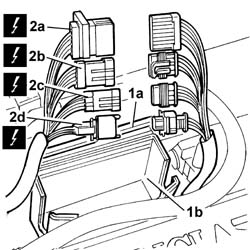
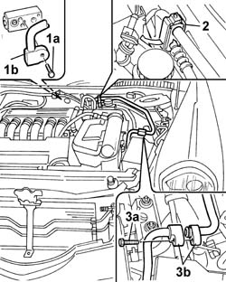

5040A72 Pipe from expansion valve to coupling - R.R.
- Path
- Procedures > 50 auxiliary units > 5040 AIR CONDITIONING CASING AND COMPONENTS > 5040A AIR CONDITIONING COOLING CIRCUIT > 5040A72 Pipe from expansion valve to coupling - R.R.
- Kind
- repair procedure (removal / refitting; the operation number is the code)
- Applies to
- all engines; all production periods
- Interactive page
- https://sloeber94.github.io/elrnDB-lThss/en/#/157278
Applies to: all engines; all production periods
 Removing
Removing
 Refitting
RefittingSee in Op. 5040A10 Air conditioning coolant circuit - Drying and Repressurizing
See in Op. 7040D50 ENGINE COMPARTMENT UPPER SOUND INSULATION SHIELD - R.R.
- Open the boot and disconnect the negative battery terminal.
Applies to: engines: 3.0 V6, 3.2 V6; all production periods
See in Op. 1056B82 Injection/ignition system CONTROL UNIT (one) - R.R.
1. Open the cover (1a) for the connector protective casing (1b).
2. Disconnect the connectors (2a), (2b), (2c), (2d) and place the electrical wiring away from the work area.
 | Description | Connector |
|---|---|---|
2a | Front/engine coupling | D004 |
| Description | Connector |
|---|---|---|
2b | Lambda sensor on catalyzer | K017 |
| Description | Connector |
|---|---|---|
2c | Lambda sensor on catalyzer 2 | K018 |
| Description | Connector |
|---|---|---|
2d | Detonation sensor - 2 | K050 |

Applies to: all engines; all production periods
- Move the heater pipes aside.
1. Undo the bolt (1a) fixing the low pressure pipe (1b) to the expansion valve.
- Disconnect the low pressure pipe from the expansion valve and move it aside.
2. Open the pipe retaining band following the direction shown by the arrow in the diagram and release the pipe from the retaining springs.
3. Undo the bolt (3a) fixing the pipe to the joint (3b).
- Separate the pipes.
- Remove the pipe from the expansion valve to the joint.

Applies to: all engines; all production periods
Refitting
Removing- Secure th epipe from the evaporator to the compressor inlet pipe using the retaining bands.
- Connect one end of the pipe to the joint with the compressor inlet pipe.
- Connect the remaining end of the pipe from the evaporator to the compressor inlet to the expansion valve.
- Repositin the heater pipes.
Applies to: engines: 3.0 V6, 3.2 V6; all production periods
- Connect the electrical connectors for the front/engine coupling, the Lambda sensors and the detonation sensor.
| Description | Connector |
|---|---|---|
. | Front/engine coupling | D004 |
| Description | Connector |
|---|---|---|
. | Lambda sensor on catalyzer | K017 |
| Description | Connector |
|---|---|---|
. | Lambda sensor on catalyzer 2 | K018 |
| Description | Connector |
|---|---|---|
. | Detonation sensor - 2 | K050 |
- Reposition the connectors in the protective casing.
- Close the protective casing.
See in Op. 1056B82 Injection/ignition system CONTROL UNIT (one) - R.R.
Applies to: all engines; all production periods
- Connect the negative battery terminal.
See in Op. 5040A10 Air conditioning coolant circuit - Drying and Repressurizing
See in Op. 7040D50 ENGINE COMPARTMENT UPPER SOUND INSULATION SHIELD - R.R.
Topics linked from this page (3)
- 1056B82 Injection/ignition system CONTROL UNIT (one) - R.R.
- 5040A10 Air conditioning coolant circuit - Drying and Repressurizing
- 7040D50 ENGINE COMPARTMENT UPPER SOUND INSULATION SHIELD - R.R.